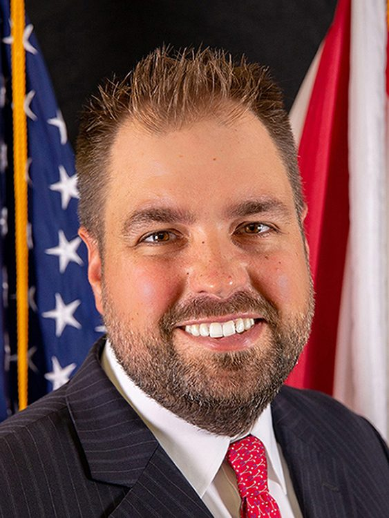
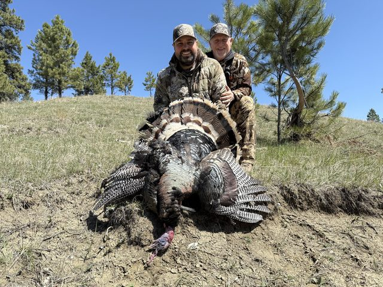
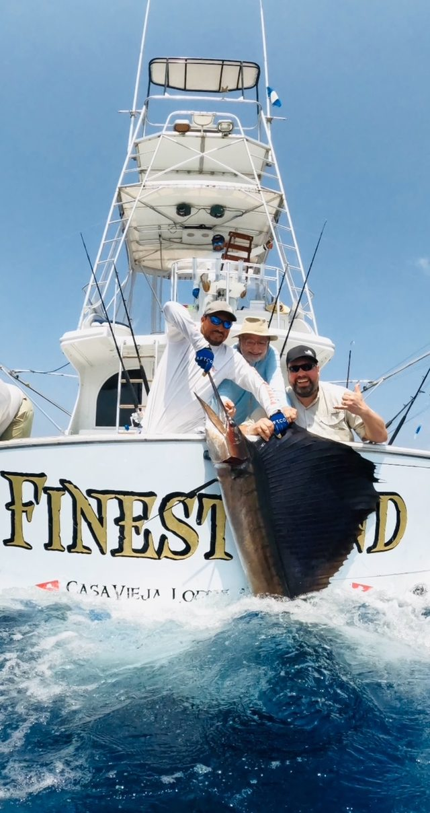
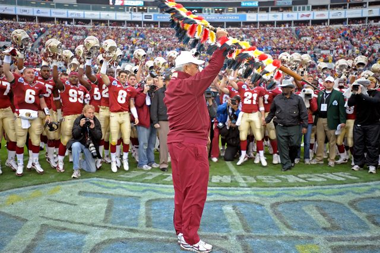
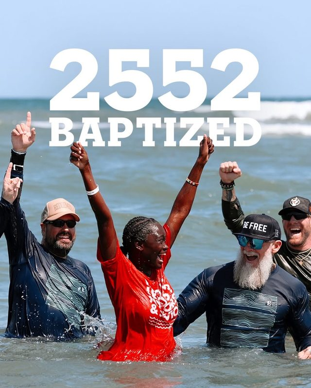
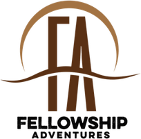
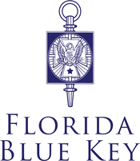
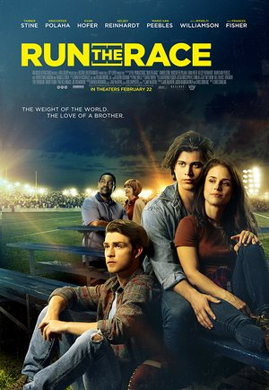

About Erik
It is my hope and prayer that these words and pages both honor and glorify the Lord!
Erik Dellenback is a husband and father who lives in St. Augustine, Florida. He is the Chief Executive Officer of Florida Family Voice and an ordained pastor at The Church of Eleven22. Before that he spent nearly six years in the Executive Office of the Governor as Florida’s first Governor’s Liaison for Faith and Community, nearly seven years as the founding president of the Tim Tebow Foundation, and eleven years with the Gator Bowl Association.
He is an Eagle Scout, studied at the University of Florida, where he was a member of Florida Blue Key, has been an executive producer on two films, and for seven years owned restaurants: an Auntie Anne’s and Planet Smoothie storefront in St. Augustine, a food truck across Northeast Florida, and a Joey’s Custard on Sanibel Island until Hurricane Ian closed it.
Things I love
-

The outdoors
Turkey, pheasant, even python. He chairs the board of Fellowship Adventures, which takes ministry leaders hunting and fishing to find rest and community.
-

Deep sea fishing
A sailfish out of Casa Vieja Lodge.
-

Football
Eleven years at the Gator Bowl, the first three ACC Football Championships, and the field at Bobby Bowden’s last game.
-

The church
An ordained pastor at The Church of Eleven22, and 2,552 baptized.
-
Family
Husband and father, at home in St. Augustine, Florida.
-
Haiti
The trip where a woman told him, “you’ll never unsee what you’ve seen today.” It became the anthem of his life.
An unqualified career
- 2025 to present
Florida Family Voice
Chief Executive Officer
- 2025 to present
The Church of Eleven22
Ordained Pastor
- 2019 to 2025
Executive Office of the Governor, State of Florida
Florida’s first Governor’s Liaison for Faith and Community, and Executive Director of Hope Florida in 2025
- 2018 to 2024
For Others
Founding board member of Chris Tomlin’s foundation, and its founding interim president from 2020 to 2022
- 2017 to 2024
Auntie Anne’s, Planet Smoothie and Joey’s Custard
Owner and franchisee in St. Augustine, Northeast Florida and on Sanibel Island
- 2017 to present
Hat n Hoodie Consulting
Founder, first as Mercy Seeds Consulting
- 2011 to 2017
Tim Tebow Foundation
Founding President and Executive Director; started Night to Shine
- 2008 to 2011
Flagler College
Adjunct Professor, Sales in Sports Management
- 2000 to 2011
Gator Bowl Association
Intern to Vice President and Chief Marketing Officer; Founding Director of the ACC Football Championship, 2004 to 2008
What he did at each of them, with the logos: In good company.
Boards, honors and callings



- Eagle Scout
- Chairman, Fellowship Adventures, 2020 to present
- Chairman, Florida’s Statewide Faith and Community Advisory Council, 2022 to 2025
- Board member, Florida’s Foundation for Correctional Excellence, 2019 to 2024
- DECA State Champion
Films

Run the Race
Executive producer. Released 2019.
He Calls Me Daughter
Executive producer. 2024 to 2026.
The rest of it, in his own words
Read Erik’s story